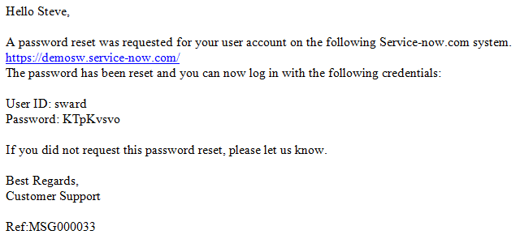

Self Service Password Reset
| |
Note: This article applies to Fuji and earlier releases. For more current information, see Self Service Password Reset at http://docs.servicenow.com
The ServiceNow Wiki is no longer being updated. Visit http://docs.servicenow.com for the latest product documentation. |
Contents
1 Overview
The Self Service Password Reset plugin enables locally authenticated end users to reset their own passwords. All of the components are fully customizable to meet individual needs. By default there is a new message and link on the login page to access the reset page. Users are prompted for their username and email address. If the system locates an active record, it generates a temporary password and sends an email to the user with the details. Users who resent their passwords receive a message with the results of the reset request.
| |
Note: This feature works only for locally authenticated users. Users logging in via an SSO solution or an LDAP integration cannot reset their passwords in this fashion since ServiceNow does not generally know these passwords. |
2 Installed with the Plugin
The following ServiceNow functionality is updated with the installation of the Self Service Password Reset Plugin:
- Script Include: PasswordResetAJAX - AJAX Script to process a password reset from a UI Page as guest. This is customizable if you need to perform different user validation logic.
- UI Page: reset_password - Page to prompt for password reset information.
- Event: password.reset - Event fired by PasswordResetAJAX script include to trigger the Password Reset Notification.
- Email Notification: Email sent to the user notifying them of the reset and their temporary password.
- Welcome Page Content: Message on welcome page to link users to the password reset page.
- Public Page: Enabled the reset_password UI Page to be viewed by guests.
3 Resetting a Password
The plugin creates a link on the login screen that invites users who have forgotten their credentials to reset their password.
{kind=link}
The link from the login page opens the Reset My Password form that requests the user's user name and email address.
{kind=link}
After the user completes the form and clicks Reset Password, ServiceNow validates the user_id and email address. If they match, a temporary password is generated automatically for that user and notification is sent to the email address provided. The out-of-box email notification looks like this:
|  |
{kind=link}
The user then logs in to the ServiceNow instance using the temporary password. A page appears requiring the user to create a new, permanent password before continuing. A ServiceNow session is established for that user when he clicks Submit.
{kind=link}
4 Customization Options
You can customize the following pieces of this feature:
- Password reset message in the login screen
- Contents of the Reset My Password form
- Password reset validation and processing
- Subject line and message in the email notification
4.1 Changing the Reset Message
To change the password reset message that is displayed to the end user:
- Navigate to System UI > Welcome Page Content.
- Open the record for Forgot your login credentials?.
- Change the string in the Short description field if you want the password reset prompt title to be different.
- Edit the text of the prompt, and then click Update.
{kind=link}
4.2 Modify the Reset My Password Form
You can modify both the text and the function of the form.
- Navigate to System UI > UI Pages.
- Search for and open the UI Page called reset_password.
- Edit the parameters for the reset password form in the HTML editor, and then click Update.
{kind=link}
4.3 Processing the Password Reset
The logic that verifies the user account information and performs the password reset resides in a Script Include record. This is where you can modify the functionality as well as the confirmation and error messages displayed on the screen.
- Navigate to System Definition > Script Includes.
- Open the PasswordResetAJAX record.
The default logic is:
- Any user record that is linked to an LDAP source will not be reset, since it does not utilize the password in the record.
- The user name and email address provided on reset form must match the user record.
- The user account must be active.
{kind=link}
4.4 Editing the Email Notification
You can edit the email notification used to send a temporary password.
- Navigate to System Policy > Notifications.
- Open the Password Reset Notification record.
- You can edit the subject line and message body, or configure copies to be sent to other users.
- Click Update.
{kind=link}